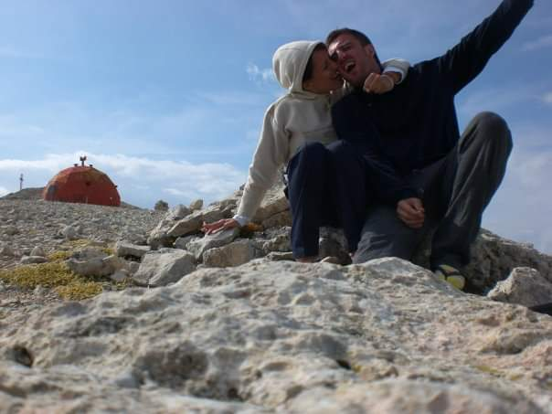

Fabio Palusci, mentor di BoostAbruzzo, é un professionista expat abruzzese a Malta che nutre un amore smisurato per le sue radici e per la nostra regione. Abbiamo avuto il piacere di intervistarlo per la notra rubrica DI CHI SI LU FIJE?. Grazie Fabio, speriamo di vederci presto a Malta o a Silvi!
Luca, raccontaci un po’ di te! Chi sei e di cosa ti occupi?
Che dire, proviamo a sintetizzare 44 anni di vita in poche parole: sono nato a Chieti, ma sin da piccolo ho preferito trascorrere più tempo possibile a Castelferrato (frazione di Torrevecchia Teatina) dai nonni materni. Attualmente la mia residenza è lì, e quando ne ho l’occasione (in questo periodo, a causa della pandemia è un po’ difficile) cerco di tornare per trascorrere più tempo possibile tra le colline e gli uliveti, guardando il mare di Francavilla e le nostre montagne... che nostalgia!
Sono partito presto, avevo circa 18 anni quando mi sono trasferito a L’Aquila e poi ho lasciato l’Abruzzo per cercare di trovare la mia strada.
L’università è stata l’occasione per farlo, tanti anni meravigliosi trascorsi a Bologna. Dopo essermi laureato in Ingegneria Edile/Architettura e aver lavorato un anno con la professoressa relatrice della mia tesi, ho deciso che avevo bisogno di altro: andare all’estero, diventare un expat. Sono passato da Yerevan a Praga, per poi fermarmi un po’ a Bratislava, volare a Haifa, tornare nuovamente in Slovacchia e infine trasferirmi a Taunton, in UK, dove mi trovo da tre anni, trascinando in tutti questi traslochi, o meglio rendendone partecipe Paola, mia moglie.
Attualmente mi occupo di nucleare e nello specifico gestisco la realizzazione di nuovi impianti, credo che sia il giusto sbocco lavorativo per un Ingegnere Edile/Architetto.
Ho iniziato la mia avventura nel nucleare per casualità: al termine del primo lavoro in Armenia, mi hanno contattato e chiesto se fossi interessato a spostarmi a Praga per gestire il design civile di un impianto in Slovacchia. Adesso, in Inghilterra, nel cantiere di Hinkley Point C, sono impegnato in particolare nella costruzione del liner di contenimento, delle piscine per il combustibile e di tutti i serbatoi e tubi in acciaio del sistema primario dei due reattori previsti.
Com’è la vita da expat? Ti manca l’Abruzzo?
La vita da expat è intensa: ti insegna tanto e mette a dura prova la tua forza d’animo e il tuo carattere.
All’inizio sei da solo con i tuoi obiettivi in testa, a dover fare i conti con la tua determinazione per raggiungerli in un contesto e un ambiente completamente nuovi. È una sfida continua, una vita che ti dà tanto, ma ti toglie altrettanto: amici, abitudini, luoghi cari, e soprattutto il tempo, costringendoti a vivere a distanza.
Se mi manca l’Abruzzo? Mi manghe gne nu fije.
Quali sono i lati positivi di vivere all’estero?
Sono tanti. Innanzitutto, cresci molto e più velocemente, perché non ci sono mamma e papà ad aiutarti. Ma soprattutto migliori culturalmente e spiritualmente: vedi tanto altro e impari come adattarti a posti diversi, interagendo con nuove culture e modi di fare; impari anche ad apprezzare (poco) tanti piatti e cucine diverse, e hai tu stesso l’occasione di far vivere ad altri esperienze gastronomiche che difficilmente potrebbero sperimentare.
Recentemente il Ministro Cingolani, titolare del dicastero per la Transizione Ecologica, sembra essere disposto a riaprire il dibattito sul nucleare. Pensi che esista una effettiva possibilità in Italia per il nucleare? Quali sono gli ostacoli?
Magari, ma in realtà è molto difficile, e a prescindere dal risultato dei due Referendum, ci vuole molto tempo per concretizzare una strategia energetica nazionale basata su o che includa il nucleare. Per costruire un impianto è necessario tanto lavoro preparatorio, in termini di autorizzazioni, di presenza di un’agenzia atomica nazionale consolidata, che abbia un progetto e una tecnologia approvate sul tavolo. La procedura richiede una ventina di anni, prima che si possa individuare un sito e iniziare a scavare per costruire.
A quel punto servono altri 10 o 15 anni per la costruzione. È molto complesso, si è sottoposti a continue ispezioni e controlli da parte delle agenzie nazionali e internazionali, come la AIEA, l’Agenzia Internazionale per l’Energia Atomica, e la WANO (World Association of Nuclear Operators), nata dopo Chernobyl. L’Italia si sta però muovendo su un altro fronte, quello dei mini-reattori. Sono piccoli impianti prodotti in serie in fabbrica, utilizzabili dappertutto e facilmente replicabili, fattore che permette di ottenere e mantenere una qualità e standard di sicurezza molto alti e abbattere i costi di realizzazione. Il nostro Paese ha creato diverse start-up e sta raccogliendo numerosi fondi per lavorare in questo settore, comprendendone l’importanza. La difficoltà è che, purtroppo, c’è ancora tanta paura nelle persone, dettata dall’ignoranza e da un terrorismo mediatico che dura dal 1986.
Sono convinto che per centrare l’obiettivo del Carbon Zero l’Italia abbia bisogno di un piano energetico diversificato e che senza il contributo del nucleare sia impossibile da raggiungere
L’Abruzzo potrebbe essere coinvolto?
L’Abruzzo non solo è coinvolto, ma è anche protagonista. In Francia esiste un progetto campione chiamato ITER, con il quale si sta tentando di realizzare un impianto utilizzando la tecnologia della fusione nucleare (la stessa reazione con la quale le stelle nascono e muoiono). Proprio in Abruzzo, a Chieti, c’è la Walter Tosto S.p.a., fornitrice insieme alla cordata AMW (Ansaldo Nucleare, Mangiarotti/Westinghouse, Walter Tosto) dei componenti del Vacuum Vessel del Tokamak, al cui interno si raggiungeranno i 150 milioni °C di temperature del plasma.
Da dove consigli di partire per chi volesse approfondire la questione del nucleare?
Da un corso di Ingegneria Nucleare… scherzo! Su Facebook, ad esempio, c’è una pagina che si chiama “L’avvocato dell’atomo”. È molto interessante e offre risposte in maniera chiara e “semplice” alle domande e ai dubbi più comuni di chi prova ad avvicinarsi a questa tecnologia. Inoltre, mi sto occupando in prima persona di una campagna di informazione e sensibilizzazione nelle università, dove tengo seminari sulla qualità del nucleare: ho iniziato a Roma presso La Sapienza e sarò a dicembre a Bologna al corso di Ingegneria Gestionale.
Abruzzo: Mare o montagna?
Tutte e due, ma forse più la montagna. Le nostre, da dove si vede il mare.
Qual è il tuo piatto abruzzese preferito?
Per impulso risponderei gli arrosticini, ma in effetti non li considero soltanto un piatto, piuttosto una religione, di cui sto esportando ampiamente il verbo. A parte gli scherzi, credo che il mio piatto preferito siano i carciofi ripieni, quelli di nonna.
Un’ultima domanda permetticela... Di chi si lu fije?
Piacere, sono Luca... Lu nipote di Dandine di Zambette.
